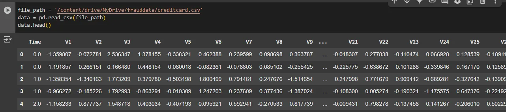
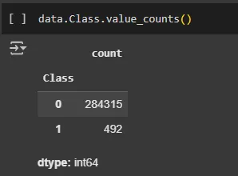
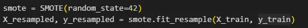
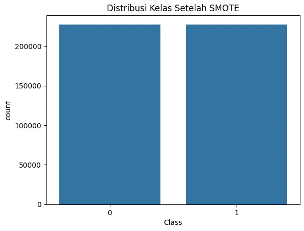
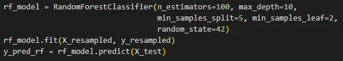
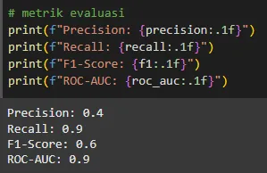

Fraud detection in financial transactions is a significant challenge within the banking and finance industries. Fraudulent activities can result in substantial losses for both companies and customers. Therefore, applying machine learning techniques to detect fraudulent behavior is essential for effective risk mitigation.
In this project, I utilized the Random Forest algorithm, an ensemble method known for its capability to handle complex and imbalanced datasets. To address the common issue of class imbalance in financial transaction datasets, I implemented the Synthetic Minority Over-sampling Technique (SMOTE). SMOTE generates synthetic samples for the minority class (fraud) to help the model better learn patterns related to fraudulent transactions.
Random Forest can be envisioned as a collection of decision trees working together. Each tree makes a decision on whether a transaction is fraudulent or not based on learned rules from the training data. The final decision is determined by majority voting across all trees in the forest.
SMOTE is an oversampling technique designed to handle imbalanced datasets. For example, in a dataset where normal transactions greatly outnumber fraudulent ones, SMOTE generates synthetic fraud samples to balance the dataset, allowing the model to more effectively identify fraud patterns.
The dataset used in this study is the Credit Card Transactions dataset, which has undergone Principal Component Analysis (PCA) to ensure customer confidentiality. The features analyzed include:
The model learns the relationship between these features and the target label, where Class = 0 denotes normal transactions and Class = 1 denotes fraudulent transactions.
 First, the dataset was divided into features (X) and target labels (y) by removing the ‘Class’ column from the feature set. The data was then normalized and split into training and testing subsets.
Next, SMOTE was applied to balance the dataset by synthetically generating samples for the minority fraud class.
Result
Subsequently, the Random Forest model was trained with regularization parameters, such as limiting tree depth and setting minimum sample requirements for splits and leaf nodes. These parameters help improve model generalization and reduce overfitting, especially after applying SMOTE.
The model was evaluated using metrics including precision, recall, F1-score, and ROC-AUC to provide a comprehensive assessment in the context of imbalanced classification.
The evaluation results demonstrated a high recall score, indicating strong ability to detect fraudulent transactions. However, the precision score was relatively low, suggesting that the model produced some false positives — normal transactions misclassified as fraud. The F1-score reflected a balance between precision and recall, while the high ROC-AUC score indicated the model’s effectiveness in distinguishing between the two classes.
The model performs well in detecting fraud with high sensitivity but requires further improvement to reduce false positives and enhance precision. Potential enhancements include hyperparameter tuning and techniques to improve model generalization, which could increase performance on unseen data.